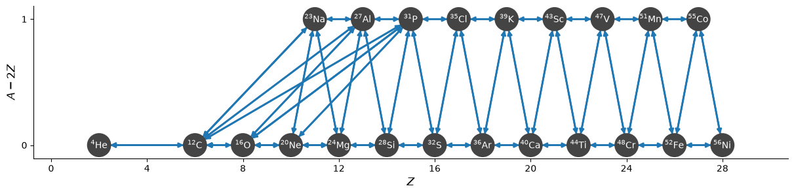
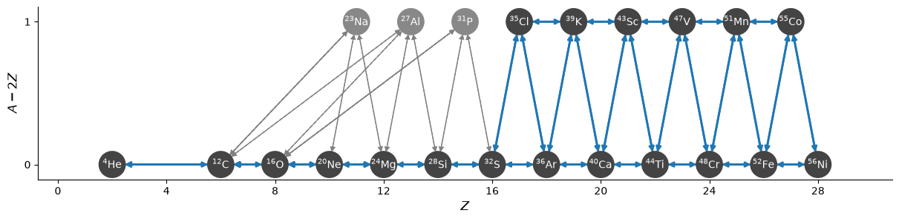
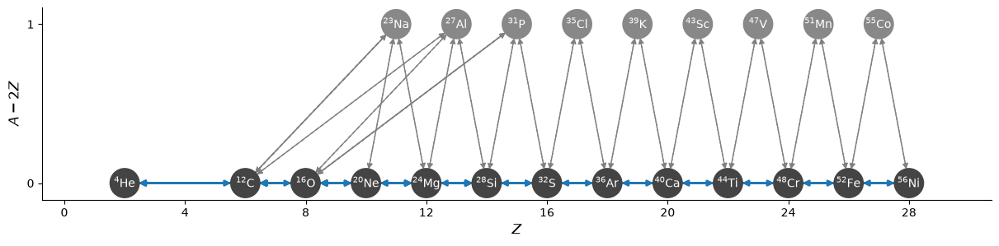
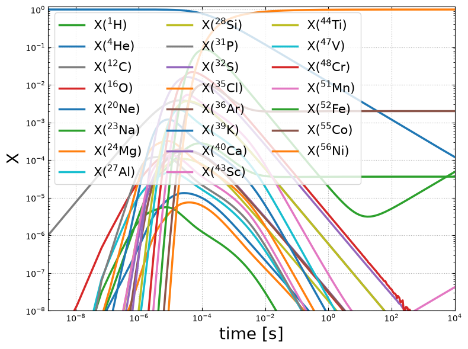
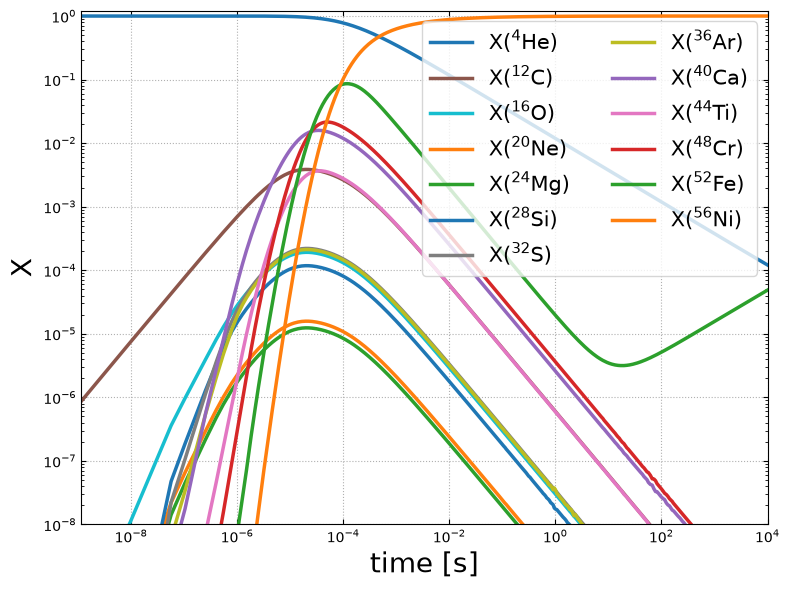
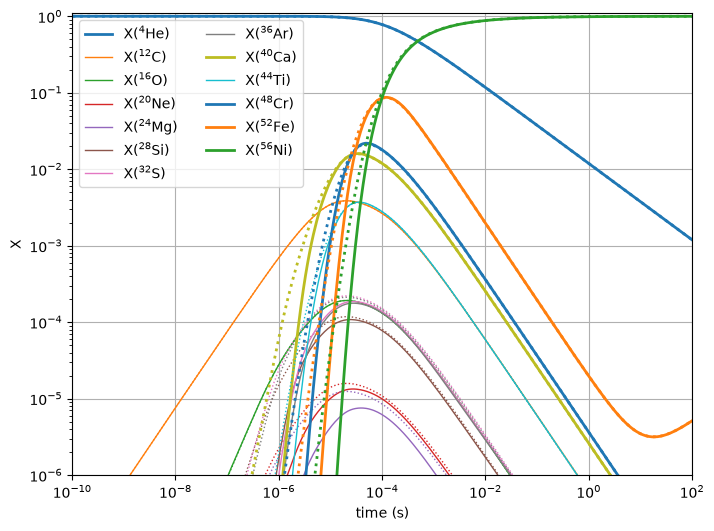

Rate Approximations#
The aprox13 network is widely used for explosive He burning in multidimensional simulations. It has 2 main approximations:
C+C, C+O, and O+O burning are simplified, removing the intermediate nucleus from the proton emission branch and neglecting the neutron-emission branch
The \((\alpha,p)(p,\gamma)\) links are combined with \((\alpha,\gamma)\)
We can do both approximations.
A starting network#
To begin, we’ll create a network will all of the nuclei (including those that will be approximated out later). We’ll use network_helper so we automatically rederive reverse rates using detailed balance.
import pynucastro as pyna
net = pyna.network_helper(["p", "he4",
"c12", "o16", "ne20", "na23",
"mg24", "al27", "si28", "p31", "s32",
"cl35", "ar36", "k39", "ca40",
"sc43", "ti44", "v47", "cr48",
"mn51", "fe52", "co55", "ni56"])
fig = net.plot(rotated=True,
size=(1200, 300), node_size=600, node_font_size=10)

net.summary()
Network summary
---------------
explicitly carried nuclei: 23
approximated-out nuclei: 0
inert nuclei (included in carried): 0
NSE compatible? True
total number of rates: 92
rates explicitly connecting nuclei: 92
hidden rates: 0
reaclib rates: 46
starlib rates: 0
temperature tabular rates: 0
weak tabular rates: 0
approximate rates: 0
derived rates: 46
branched rates: 0
modified rates: 0
custom rates: 0
Approximating#
Now we’ll approximate the C/O burning
from pynucastro.rates.aprox_family_rates import make_CO_approx_rates
approx_net = pyna.PythonNetwork(rates=net.get_rates())
approx_net.make_CO_burning_approx("C")
approx_net.remove_nuclei(["na23"])
approx_net.make_CO_burning_approx("CO")
approx_net.remove_nuclei(["al27"])
approx_net.make_CO_burning_approx("O")
approx_net.remove_nuclei(["p31"])
fig = approx_net.plot(rotated=True,
size=(1200, 300), node_size=600, node_font_size=10)

now the \((\alpha,p)(p,\gamma)\) approximation
approx_net.make_ap_pg_approx(intermediate_nuclei=["cl35", "k39", "sc43", "v47", "mn51", "co55"])
approx_net.remove_nuclei(["cl35", "k39", "sc43", "v47", "mn51", "co55"])
fig = approx_net.plot(rotated=True,
size=(1200, 300), node_size=600, node_font_size=10)

Comparing the integration#
the full network#
rho = 1.e7
T = 3.e9
comp = pyna.Composition(net.unique_nuclei, small=0.0)
comp.X[pyna.Nucleus("he4")] = 1.0
Y0 = comp.get_molar_array()
tmax = 10000.0
sol_full = net.integrate_network(tmax, rho, T, Y0, rtol=1.e-6)
/opt/hostedtoolcache/Python/3.14.7/x64/lib/python3.14/site-packages/pynucastro/rates/derived_rate.py:125: UserWarning: C12 partition function is not supported by tables: set log_pf = 0.0 by default
warnings.warn(UserWarning(f'{nuc} partition function is not supported by tables: set log_pf = 0.0 by default'))
fig = sol_full.plot_evolution(ymin=1.e-8)
/opt/hostedtoolcache/Python/3.14.7/x64/lib/python3.14/site-packages/pynucastro/networks/python_network.py:496: UserWarning: Attempt to set non-positive xlim on a log-scaled axis will be ignored.
ax.set_xlim(tmin, tmax)

aprox13 net#
comp = pyna.Composition(approx_net.unique_nuclei, small=0.0)
comp.X[pyna.Nucleus("he4")] = 1.0
Y0 = comp.get_molar_array()
sol_approx = approx_net.integrate_network(tmax, rho, T, Y0, rtol=1.e-6)
/opt/hostedtoolcache/Python/3.14.7/x64/lib/python3.14/site-packages/pynucastro/rates/derived_rate.py:125: UserWarning: C12 partition function is not supported by tables: set log_pf = 0.0 by default
warnings.warn(UserWarning(f'{nuc} partition function is not supported by tables: set log_pf = 0.0 by default'))
fig = sol_approx.plot_evolution(ymin=1.e-8)
/opt/hostedtoolcache/Python/3.14.7/x64/lib/python3.14/site-packages/pynucastro/networks/python_network.py:496: UserWarning: Attempt to set non-positive xlim on a log-scaled axis will be ignored.
ax.set_xlim(tmin, tmax)

Comparing#
import matplotlib.pyplot as plt
fig, ax = plt.subplots()
for i, nuc in enumerate(sol_approx.unique_nuclei):
lw = 1
if sol_approx.X[i, :].max() > 1.e-2:
lw = 2
ax.loglog(sol_approx.t, sol_approx.X[i, :],
linestyle=":", color=f"C{i}", lw=lw)
idx = sol_full.unique_nuclei.index(nuc)
ax.loglog(sol_full.t, sol_full.X[idx, :],
label=rf"X$({nuc.pretty})$",
linestyle="-", color=f"C{i}", lw=lw)
ax.set_ylim(1.e-6, 1.1)
ax.set_xlim(1.e-10, 100)
fig.set_size_inches((8,6))
ax.set_xlabel("time (s)")
ax.set_ylabel("X")
ax.legend(ncol=2)
ax.grid()

We see good agreement for the nuclei the two networks have in common.